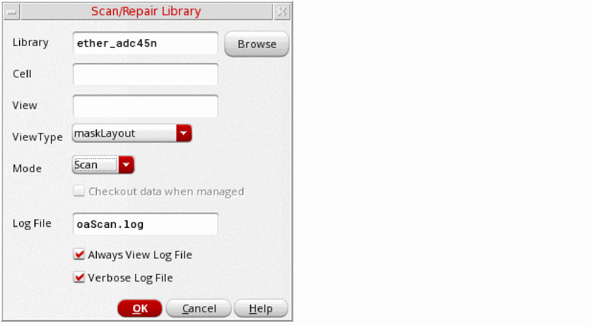

Scanning a Library
To scan an entire library or a particular design database for OpenAccess issues:
-
From the CIW menu bar, choose oaScan – Scan Library.
The Scan/Repair Library form is displayed. - Specify the name of the library to scan and, optionally, the cell and view names if you want to perform the scan on a particular design database.
- Choose a ViewType to limit the scan to only views of the specified type.
- Select the Mode in which the design is to be scanned:
-
Specify a name for the log file (the default is
oaScan.log).
You can also specify that the log file is always displayed on completion and that it lists all designs processed rather than only those that have issues. - Click OK to scan the specified database.
Related Topics
Return to top